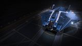

Макс. пассажиров (экономкласс)
~32
Доступный пассажирский корабль для экскурсий. Далеко прыгает, садится на среднюю площадку, недорого возит пассажиров экономкласса и долетает до маяков, недоступных большинству малых лайнеров. Но бонуса за комфорт нет, дорогие каюты входят только в два самых крупных отсека, а доход с места ниже, чем у специализированных лайнеров. Это первый пассажирский корабль, который у многих уже есть, а не самый прибыльный.

Корабль получает оценку пригодности от 1 до 100 по полностью инженерно улучшенному оснащению с учётом остальных кораблей в этой роли. См. как оцениваются корабли.
Asp Explorer в первую очередь исследователь, а во вторую — пассажирский корабль. Но качества, которые помогают ему в исследованиях, полезны и для туризма. Большая дальность РСД позволяет за меньшее число прыжков добираться до разбросанных туристических маяков. Он садится на средние площадки и аванпосты, недоступные крупным лайнерам, и недорог: у многих уже стоит в ангаре. Он оправдывает себя как первый пассажирский корабль или как исследователь, который иногда возит туристов.
Но есть ограничения. У Asp нет бонуса лайнера за комфорт, поэтому пассажиры платят по стандартным тарифам, а не с надбавкой, как на Dolphin, Orca или Beluga. Только два крупнейших отсека (классы 6 и 5) вмещают каюты первого класса или люкс, так что много дорогих VIP-мест не собрать. Он хорошо возит небольшие группы экономкласса на дальние расстояния, но приносит мало с места. Здесь платят за доступность и дальность, а не за роскошь.
Недорогие туристические рейсы к далёким и разбросанным маякам, задания через аванпосты и средние площадки, недоступные большим лайнерам, или редкие пассажирские контракты на исследовательском корабле без покупки второго корпуса.
У пассажирского Asp два преимущества и два ограничения:
Asp скорее исследователь на туристическом задании, чем лайнер. Без бонуса за комфорт и всего с двумя отсеками для дорогих кают он уступает по выручке с места даже малому Dolphin, а крупные специализированные лайнеры многократно обгоняют его по вместимости и доходу. Его преимущества — низкая цена, дальность и средняя площадка.
Доступный средний экскурсионный корабль с большой дальностью и низким порогом входа. Ограничения — отсутствие бонуса за комфорт и только два отсека для дорогих кают.
Итоговая 60/100 оценка учитывает критерии пассажирской роли по их важности. У каждого критерия есть вес (доля от 100). Корабль получает часть этих баллов по результатам сравнения со всеми остальными. Сумма баллов даёт рейтинг.
| Критерий | Баллы | Обоснование |
|---|---|---|
| Вместимость и классы кают | 19/35 | Отсеки 6·5·3·3·3·2·2·1 вмещают около 32 мест экономкласса. Это меньше, чем у Python (~52), Type-7 (~64) и Lynx (~100). Только отсеки классов 6 и 5 принимают каюты первого класса или люкс, так что дорогих мест всего два, меньше, чем на специализированных лайнерах. |
| Комфорт | 6/20 | У корпуса Lakon нет бонуса лайнера за комфорт: пассажиры платят стандартную цену, а доход с места ниже, чем у Dolphin, Orca, Lynx и Beluga. Это главное слабое место и основная причина оценки 60. |
| Дальность прыжка и бак | 17/20 | Исследовательский РСД 5A SCO с усилителем РСД Стражей 1H даёт около 45 св. лет с нагрузкой. Хорошая дальность выручает на разбросанных туристических маяках, до которых большинство малых лайнеров не допрыгнет за раз. Штатный бак 5C рассчитан на расход SCO. |
| Щит и безопасность | 9/15 | Двухпоточный щит с усилением и быстрой зарядкой плюс два усилителя с усиленной конструкцией дают более ~400 МДж при четырёх вспомогательных креплениях. Для лёгкого корпуса этого достаточно при перехвате пиратами, но до щитов лайнеров на базе боевых кораблей вроде Cutter далеко. |
| Площадка и стоимость | 9/10 | Корпус стоит 6,1 млн кр. (около 30 млн за сборку), страховка — всего около 1,5 млн. Ранг, разрешение и инженеры для старта не нужны. Это самый дешёвый серьёзный вход в перевозки. Средняя площадка и доступ к аванпостам открывают задания там, где крупный лайнер не сядет. |
| Итог с учётом весов | 60/100 | Совпадает с общей оценкой пригодности корабля к этой роли. |
Веса определены редакцией по приоритетам роли, это не игровая формула. Длина полосы показывает, какую долю баллов набрал корабль по критерию. Длинные полосы дали больше баллов, короткие показывают, на чём корабль их потерял. См. как оцениваются корабли.
Таблицы оценивают корабли именно для пассажирских перевозоки группируют их по размеру посадочной площадки. Столбец Вместимость кают показывает суммарную вместимость дополнительных отсеков, то есть место под каюты. Оценка пригодности использует ту же шкалу от 1 до 100, что и весь сайт.
| Корабль | Класс | Вместимость кают | Плюсы и минусы | Оценка |
|---|---|---|---|---|
| Lynx Highliner | Средняя | — | Оценка выше; комфорт; площадка и ценаЩит | 90 |
| Python | Средняя | ~294 т | Оценка выше; щит; площадка и ценаКомфорт | 70 |
| Krait Phantom | Средняя | ~190 т | Оценка выше; дальность; площадка и ценаКомфорт | 64 |
| Asp Explorer этот | Средняя | ~130 т | — этот корабль (точка отсчёта) | 60 |
| Mandalay | Средняя | ~154 т | Площадка и цена; дальностьОценка ниже; комфорт | 54 |
| Corsair | Средняя | ~318 т | Каюты; щитОценка ниже; комфорт | 50 |
| Krait Mk II | Средняя | ~230 т | Каюты; дальностьОценка ниже; площадка и цена | 46 |
| Type-8 Transporter | Средняя | ~406 т | Каюты; площадка и ценаОценка ниже; комфорт | 46 |
Оценены 8 пассажирских кораблей со средней площадкой. Лидирует Lynx Highliner (90). Все прямые соперники пользуются теми же площадками.
| Корабль | Класс | Вместимость кают | Плюсы и минусы | Оценка |
|---|---|---|---|---|
| Beluga Liner | Большая | ~370 т | Оценка выше; каюты; комфортДальность | 95 |
| Imperial Cutter | Большая | ~794 т | Оценка выше; каюты; щитКомфорт | 89 |
| Orca | Большая | ~194 т | Оценка выше; комфорт; площадка и ценаДальность | 88 |
| Anaconda | Большая | ~470 т | Оценка выше; дальность; каютыКомфорт | 82 |
| Imperial Clipper | Большая | ~250 т | Оценка выше; щит; дальностьКомфорт | 64 |
| Caspian Explorer | Большая | ~434 т | Каюты; дальностьПлощадка и цена | 60 |
| Type-7 Transporter | Большая | ~310 т | Каюты; площадка и ценаОценка ниже; комфорт | 56 |
| Type-9 Heavy | Большая | ~790 т | Каюты; площадка и ценаОценка ниже; комфорт | 56 |
| Panther Clipper Mk II | Большая | ~662 т | Каюты; щитОценка ниже; площадка и цена | 48 |
Оценены 9 больших пассажирских кораблей. Лидирует Beluga Liner (95). Они превосходят Asp по показателям, но требуют больших площадок и бюджета.
| Корабль | Класс | Вместимость кают | Плюсы и минусы | Оценка |
|---|---|---|---|---|
| Dolphin | Малая | ~88 т | Оценка выше; комфорт; площадка и ценаКаюты | 80 |
| Imperial Courier | Малая | ~34 т | Площадка и цена; щитОценка ниже; каюты | 52 |
Оценены 2 малых пассажирских корабля. Лидирует Dolphin (80). Корпуса дешевле, площадки меньше. Их показатели уступают Anaconda, но это другой класс.
При цене около 6,1 млн кр. это один из самых дешёвых подходящих пассажирских кораблей. Для покупки не нужны разрешение, ранг или доступ к инженерам и не требуется дополнение. Практичный комплект включает дорогую каюту в самом большом отсеке, экономкласс ниже, двухпоточный щит и дальнобойный РСД. Всё обойдётся примерно в 30 млн кр. Страховка — около 1,5 млн, самая низкая среди кораблей в этой подборке.
Главная экономия в том, что не нужно покупать второй корабль. На станции замените каюты исследовательскими модулями: этот же корпус с улучшениями сегодня возит туристов, завтра летит в дальний космос. Если Asp Explorer уже есть, купить каюты — самый дешёвый способ начать.
Около 30 млн кр. за весь комплект, без ограничений и с дешёвой страховкой. Каюты легко заменить исследовательскими модулями. Меньше всего платите на старте, но и меньше всех зарабатываете с места: бонуса за комфорт нет.
Недорогая туристическая сборка: дорогая каюта в большом отсеке, экономкласс в остальных, полноценный щит и дальнобойный SCO РСД. Точки подвески пусты. Начальная сборка требует только покупки, класс A — базовый пассажирский комплект, а инженерные улучшения прибавляют дальность и безопасность. Военных отсеков у Asp нет.
| Отсек | Начальное · только покупка | Класс A · без инженерии | С инженерными улучшениями | Примечания |
|---|---|---|---|---|
| Вспомогательные крепления | ||||
| Вспомогательное 1 | 0E Усилитель щита | 0A Усилитель щита | G5 Усиленная конструкция + Суперконденсаторы | Усилитель щита повышает запас прочности двухпоточного щита. Усиленная конструкция даёт заметный прирост защиты пассажиров за небольшие деньги. |
| Вспомогательное 2 | 0E Усилитель щита | 0A Усилитель щита | G5 Усиленная конструкция + Суперконденсаторы | Второй усилитель с усиленной конструкцией. Отдача уже ниже, но это по-прежнему выгодная защита для лёгкого корпуса. |
| Вспомогательное 3 | — | 0I Сбрасыватель радиаторов | G1 Боезапас (без экспериментального эффекта) | Необязательно, низкий приоритет. Модификация увеличивает запас радиаторов. Их сбрасывают для охлаждения на бесшумном ходу или для восстановления после работы тепловой вентиляции. |
| Вспомогательное 4 | — | 0A Усилитель щита | G5 Усиленная конструкция + Суперконденсаторы | Необязательно, низкий приоритет. Увеличенный боезапас даёт дополнительные выстрелы. Точечная оборона сбивает приближающиеся ракеты и торпеды. |
| Основные модули | ||||
| Броня корпуса | Лёгкий сплав | Лёгкий сплав | Облегчение G5 (без экспериментального эффекта) | |
| Энергетическая установка | 5E Энергетическая установка | 5A Энергетическая установка | G5 Пониженное тепловыделение + Рассеивание тепла | Установка 5A обеспечивает питание кают, щита и форсажа. Пониженное тепловыделение помогает не перегреваться, рассеивание тепла отводит остаток. |
| Двигатели | 5E Двигатели | 5A Двигатели | G5 Форсировка двигателей + Усиленные приводы | Класс A и форсировка позволяют загруженному кораблю сохранять подвижность для ухода от перехватов и быстрой стыковки. |
| Рамочно-сдвиговый двигатель | 5A Рамочно-сдвиговый двигатель | 5A Рамочно-сдвиговый двигатель | G5 Увеличенная дальность + Оптимизация массы | Ключевой модуль: 5A SCO ускоряет полёт внутри системы. Увеличенная дальность и оптимизация массы сокращают число прыжков между разбросанными целями. |
| Жизнеобеспечение | 4E Жизнеобеспечение | 4D Жизнеобеспечение | G5 Облегчение (без экспериментального эффекта) | Выберите класс D для снижения массы. Облегчение уменьшает её дополнительно и вместе с РСД прибавляет дальность. Экспериментальных эффектов нет. |
| Распределитель энергии | 4E Распределитель энергии | 4A Распределитель энергии | G5 Приоритет двигателей + Сверхпроводящие каналы | Класс 4A для форсажа и восстановления запаса энергии. Приоритет двигателей и сверхпроводящие каналы быстрее пополняют конденсатор двигателей, чтобы уйти от опасности. |
| Сенсоры | 5E Сенсоры | 5D Сенсоры | G5 Облегчение (без экспериментального эффекта) | Поставьте класс D и облегчите модуль. Для туризма большая дальность сенсоров не нужна: лучше снизить массу ради прыжка. Экспериментальных эффектов нет. |
| Топливный бак | 5C Топливный бак | 5C Топливный бак | (чертежа нет) | Штатный бак 5C рассчитан на расход РСДс SCO. Ёмкость фиксирована и не улучшается у инженеров. |
| Дополнительные отсеки | ||||
| Размер 6 | 6E Пассажирская каюта экономкласса | 6C Пассажирская каюта первого класса | (чертежа нет) | Одно дорогое место: каюта первого класса в крупнейшем отсеке приносит больше за пассажира. У инженеров каюты не улучшаются. |
| Размер 5 | 5D Генератор щита | 5C Двухпоточный генератор щита | G5 Усиление + Быстрая зарядка | Двухпоточный щит быстро восстанавливается под огнём и защищает пассажиров. Усиление увеличивает запас МДж, быстрая зарядка ускоряет восстановление. На безопасных рейсах с сопровождением можно заменить его каютой люкс. |
| Размер 3 | 3E Пассажирская каюта экономкласса | 3D Пассажирская каюта бизнес-класса | (чертежа нет) | Каюта бизнес-класса даёт тариф выше эконома. Инженерных чертежей нет. |
| Размер 3 | 3E Пассажирская каюта экономкласса | 3E Пассажирская каюта экономкласса | (чертежа нет) | Каюта экономкласса вмещает больше пассажиров с низкой ценой билета. У инженеров не улучшается. |
| Размер 3 | — | 3A Топливозаборник | (чертежа нет) | Ещё одна вместительная каюта экономкласса. У инженеров не улучшается. |
| Размер 2 | — | 2E Пассажирская каюта экономкласса | (чертежа нет) | Каюта экономкласса добавляет пассажирские места в малом отсеке. У инженеров не улучшается. |
| Размер 2 | — | 2E Пассажирская каюта экономкласса | (чертежа нет) | Последняя каюта экономкласса. У инженеров не улучшается. |
| Размер 1 | 1I Подробный сканер поверхности | 1H Усилитель РСД Стражей | (чертежа нет) | В отсек 1-го размера не входит пассажирская каюта (эконом начинается с размера 2), поэтому здесь ставят Усилитель РСД Стражей для увеличения дальности. У инженеров не улучшается. |
| Открыть в планировщике / экспорт | ||||
| Открыть в Coriolis | открыть | открыть | открыть | Открывает сборку на coriolis.io. |
| Открыть в EDSY | открыть | открыть | открыть | Открывает сборку на edsy.org. |
| Копировать SLEF | Копирует данные этой стадии в формате экспорта оснащения (SLEF). | |||
Поставьте одну дорогую каюту первого класса или люкс в отсек 6-го класса: она принесёт больше с пассажира. Остальные места заполните экономклассом. В отсеке 5-го класса оставьте двухпоточный щит для опасных маршрутов. Заменяйте его второй каютой люкс только на безопасном маршруте с сопровождением. Бонуса за комфорт нет, а преимущества Asp — дальность и доступность. Для исследований снова замените каюты модулями.
Купите корпус: штатный лёгкий сплав в качестве брони бесплатен. С ним ниже масса и дальность прыжка. Для туристических рейсов начните с каюты 6E экономкласса для пассажиров в отсеке 6-го класса и двух кают 3E экономкласса в остальных отсеках, с 5D генератором щита в отсеке 5-го класса и двумя 0E усилителями щита для безопасности. 1I Подробный сканер поверхности занимает отсек 1-го размера.
Первым поставьте 5A Рамочно-сдвиговый двигатель. Это единственный основной модуль, который сразу покупают в классе A: дальность и скорость внутри системы позволяют Asp брать экскурсионные маршруты по разбросанным маякам.
Пока оставьте два вспомогательных крепления и малые дополнительные отсеки пустыми. При переходе на класс A добавьте третий усилитель щита, сбрасыватель радиаторов и топливозаборник. Получится доступный экскурсионный корабль для дальних маршрутов заметно дешевле 20 млн кр.
Приоритет перехода на класс A:
Asp выигрывает дальностью и ценой, а не комфортом. Сначала поставьте класс A на РСД, потом одну дорогую каюту и экономкласс в остальные отсеки. Усилитель РСД Стражей увеличит дальность, а топливозаборник поможет не остаться без топлива вдали от станции.
Инженерная сборка для пассажирских перевозок с упором на дальность. Felicity Farseer (максимальная репутация) предлагает РСД. Закрепляйте чертежи для удалённого применения с G1 до G5.
| Модуль | Чертёж | Экспериментальный эффект | Инженер |
|---|---|---|---|
| Рамочно-сдвиговый двигатель (5) | Увеличенная дальность (G5) | Оптимизация массы | Felicity Farseer |
| Двигатели (5) | Форсировка двигателей (G5) | Усиленные приводы | Professor Palin / Mel Brandon |
| Энергетическая установка (5) | Пониженное тепловыделение (G5) | Рассеивание тепла | Hera Tani |
| Распределитель энергии (4) | Приоритет двигателей (G5) | Сверхпроводящие каналы | The Dweller |
| Двухпоточный щит (5) | Усиление (G5) | Быстрая зарядка | Lei Cheung |
| Усилители щита | Усиленная конструкция (G5) | Суперконденсаторы | Didi Vatermann |
| Жизнеобеспечение / Сенсоры | Облегчение (G5) | — | Etienne Dorn |
| Броня корпуса | Облегчение (G5) | — | Selene Jean |
Небольшие затраты для пассажирской роли: РСД, облегчённые основные модули, двигатели и щит. Оружие улучшать не нужно. Felicity Farseer с максимальной репутацией закрывает большую часть работы; РСД даёт основную прибавку. При необходимости уточните расход по каждому чертежу.
Примерный прогресс по трём стадиям. Показатели ориентировочные, не точные значения улучшений.
| Показатель | Начальное | Класс A | С инженерными улучшениями |
|---|---|---|---|
| Пассажирские места | ~40 | ~23 | ~23 |
| Каюты высокого класса | 0 | 1 | 1 |
| Макс. прыжок с нагрузкой (св. лет) | ~30 | ~38 | ~45 |
| Заправка от звезды (топливозаборник) | нет | да | да |
| Бонус лайнера за комфорт | нет | нет | нет |
| Щит (МДж) | ~140 | ~280 | ~450+ |
Обратите внимание: число мест уменьшается при переходе на класс A, и это намеренно. Начальная сборка берёт около 40 пассажиров экономкласса. В сборке A каюту 6-го класса меняют на 6C первого класса, которая приносит больше с места, а одну каюту экономкласса 3-го размера меняют на топливозаборник. С инженерными улучшениями Asp заправляется от звёзд, перевозит пассажиров с каютой первого класса и прыгает примерно на 45 св. лет благодаря усилителю Стражей и дальнобойному РСД. Три усилителя щита с усиленной конструкцией помогают пережить перехваты, а средние площадки открывают места, недоступные большим лайнерам. С места он зарабатывает меньше любого специализированного лайнера: бонуса за комфорт нет, а наверху только одна каюта первого класса. Его преимущества — низкая цена и большая дальность, а не доход.
Лучше всего подходят задания к разбросанным и далёким туристическим маякам, где дальность и средняя площадка важнее роскоши. С домашней базы Asp берёт недорогие дальние экскурсии, недоступные малым лайнерам.
Asp Explorer — бюджетный вариант для перевозки пассажиров: низкая цена входа и страховки, большая дальность и средняя площадка для заданий, недоступных крупным лайнерам. Оценка 60/100: без бонуса за комфорт и всего с двумя отсеками под дорогие каюты доход с места ниже, чем у любого специализированного лайнера. Зато у многих уже есть такой корабль, на котором можно недорого летать далеко.
Цифры на странице сверены с источниками ниже.